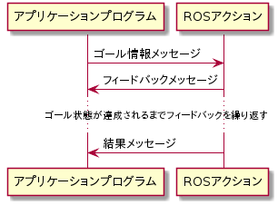
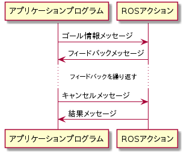
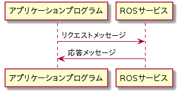

move_groupサーバの仕様¶
move_groupサーバの全体構成を以下に示します。
プランニングと実行などの長期のタスクを実行する際には、ROSアクション（図中赤線）が用いられます。
その他のサービスは、ROSサービス（図中青線）を用いて提供されます。
環境情報のアップデートは、一方向通信のROSトピック（図中緑線）が用いられます。

注釈
Above image is from http://moveit.ros.org/
ROS Action一覧¶
ROSアクションを各言語で呼び出すにはROSのactionlibを使います。 詳細な使い方は、以下の外部ドキュメントを参照してください。
http://wiki.ros.org/ja/actionlib
ROSアクション呼び出しは、内部的にはROSメッセージの送信（ゴール情報の送信）と受信（フィードバックメッセージと結果メッセージ）の双方向通信として実現されます。

ROSアクションはactionlibを通して、実行途中でキャンセルすることもできます。以下はその場合のシーケンスです。

MoveGroup¶
軌跡の計算と実行を行うアクションです
-
moveit_msgs/MoveGroup¶ - フィールド（ゴール）
request (moveit_msgs/MotionPlanRequest) -- プランナーに渡すモーションプランニングリクエスト
planning_options (moveit_msgs/PlanningOptions) -- プランニングオプション
- フィールド（結果）
error_code (moveit_msgs/MoveItErrorCodes) -- 何がうまくいかなかったかを示すエラーコード
trajectory_start (moveit_msgs/RobotState) -- 軌道の開始時のロボットの開始状態
planned_trajectory (moveit_msgs/RobotTrajectory) -- 生成された軌跡
executed_trajectory (moveit_msgs/RobotTrajectory) -- 軌跡実行中に記録されたロボットの実際の軌跡
planning_time (float64) -- モーションプランを完了するのにかかった時間
- フィールド（フィードバック）
state (string) -- 現在の内部状態
ExecuteTrajectory¶
軌跡の実行を行うアクションです
-
moveit_msgs/ExecuteTrajectory¶ - フィールド（ゴール）
trajectory (moveit_msgs/RobotTrajectory) -- 実行する軌跡
- フィールド（結果）
error_code (moveit_msgs/MoveItErrorCodes) -- エラーコード- 失敗の全般的な理由を示します
- フィールド（フィードバック）
state (string) -- 現在の内部状態
Pickup¶
ピッキング動作を行う高レベルアクションです
-
moveit_msgs/Pickup¶ - フィールド（ゴール）
target_name (string) -- ピックアップするオブジェクト名（オブジェクト名はplanning sceneで既知である必要があります）
group_name (string) -- ピックアップのプランニングに使用するグループ名
end_effector (string) -- ピックアップに使用するエンドエフェクタ名（原則的には上記グループ内のリンク）
possible_grasps[] (moveit_msgs/Grasp) -- 把握姿勢候補のリスト。少なくとも1つの把握姿勢が必要です
support_surface_name (string) -- 干渉マップ上での支持平面（テーブルなど）の名前。名前が利用できない場合は空のままにすることができます
allow_gripper_support_collision (bool) -- 把持前から把持への移動中およびリフト中に、グリッパーと支持平面の間の干渉を許容するかどうか。把持前の場所に移動する際の干渉は、これがtrueに設定されている場合でも許可されません。
attached_object_touch_links[] (string) -- オブジェクトと接触判定されるリンクの名前。空のままにすると、デフォルトで使用されるエンドエフェクタのリンクになります
minimize_object_distance (bool) -- 必要に応じて、アプローチ方向に沿って、オブジェクトに近づく必要があることを把握アクションに通知します（これにより、把持する前にオブジェクトまでの距離を縮めます）。注：このオプションは、possible_grasps[]で提供される把握姿勢をオブジェクトに近づくように変更する場合があります。
path_constraints (moveit_msgs/Constraints) -- モーションプランのすべての点に対して適用される制約（任意）
planner_id (string) -- 使用するモーションプランナーの名前。名前が指定されていない場合、デフォルトのモーションプランナーが使用されます
allowed_touch_objects[] (string) -- 付加情報を持っている障害物のリスト（任意）。これら障害物は把握の過程で触り/押し/移動することができます。注意：オブジェクト名「all」が使用されている場合、アプローチおよびリフト中にすべてのオブジェクトとの接触判定が無効になります。
allowed_planning_time (float64) -- モーションプランナーのタイムアウト時間
planning_options (moveit_msgs/PlanningOptions) -- プランニングオプション
- フィールド（結果）
error_code (moveit_msgs/MoveItErrorCodes) -- 試行の全般的な結果
trajectory_start (moveit_msgs/RobotState) -- 軌道の開始時のロボットの開始状態
trajectory_stages[] (moveit_msgs/RobotTrajectory) -- 生成された軌跡
trajectory_descriptions[] (string) --
grasp (moveit_msgs/Grasp) -- 試みが成功した場合、実行された把握
planning_time (float64) -- プランニングを完了するのにかかった時間（秒）
- フィールド（フィードバック）
state (string) -- ピックアップアクションの内部状態
Place¶
プレース動作を行う高レベルアクションです
-
moveit_msgs/Place¶ - フィールド（ゴール）
group_name (string) -- 把握の計画に使用するグループ名
attached_object_name (string) -- プレースするオブジェクトの名前
place_locations[] (moveit_msgs/PlaceLocation) -- オブジェクトをプレースする場所候補のリスト
place_eef (bool) -- プレースする際に、場所の座標でなく、エンドエフェクタの位置座標（pickと同じ）により指定したい場合、このフラグをtrueにします。
support_surface_name (string) -- 干渉マップ上での支持平面（テーブルなど）の名前。名前が利用できない場合は空のままにすることができます
allow_gripper_support_collision (bool) -- グリッパーと支持平面の間の干渉を配置前から配置場所への移動中および後退中に許容するかどうか。これがtrueに設定されている場合でも、事前配置場所に移動する際の干渉は許可されません。
path_constraints (moveit_msgs/Constraints) -- モーションプランのすべての点に対して適用される制約（任意）
planner_id (string) -- 使用するモーションプランナーの名前。名前が指定されていない場合、デフォルトのモーションプランナーが使用されます
allowed_touch_objects[] (string) -- 付加情報があり、プレース中に触り/押し/移動できる障害物のリスト（任意）。注意：オブジェクト名「all」を使用すると、アプローチとリトリート中にすべてのオブジェクトとの干渉判定が無効になります。
allowed_planning_time (float64) -- モーションプランナーのタイムアウト時間
planning_options (moveit_msgs/PlanningOptions) -- プランニングオプション
- フィールド（結果）
error_code (moveit_msgs/MoveItErrorCodes) -- プレースの試みの結果
trajectory_start (moveit_msgs/RobotState) -- 軌道の開始時のロボットの開始状態
trajectory_stages[] (moveit_msgs/RobotTrajectory) -- 生成された軌跡
trajectory_descriptions[] (string) --
place_location (moveit_msgs/PlaceLocation) -- プレースが成功した場所（存在する場合）
planning_time (float64) -- プランニングを完了するのにかかった時間（秒）
- フィールド（フィードバック）
state (string) -- プレースアクションの内部状態
ROSサービス一覧¶
ROSサービスを各言語で呼び出す方法については、以下の外部ドキュメントを参照してください。
C++でシンプルなサービスとクライアントを書く http://wiki.ros.org/ja/ROS/Tutorials/WritingServiceClient%28c%2B%2B%29
シンプルなサービスとクライアントを書く (Python) http://wiki.ros.org/ja/ROS/Tutorials/WritingServiceClient%28python%29
ROSサービス呼び出しは、内部的にはROSメッセージの送信（リクエスト）と受信（応答）の双方向通信として実現されます。

ROSサービスを呼び出すには以下に列挙するメッセージの型情報と共に、ROSトピック名が必要です。 利用したいROSサービスのトピック名を調べるには、rosserviceコマンドを使います。 例えば、「moveit_msgs/ApplyPlanningScene」サービスを提供するトピック名を調べるには、以下のコマンドを実行してください:
rosservice find moveit_msgs/ApplyPlanningScene
move_groupサーバの各ROSサービスは後述するプラグインの仕組みを使って実装されています。 もし上記のコマンドでROSトピック名が発見されなかった場合は、利用したいサービスを提供するプラグインが有効になっているかどうかを確認してください。
ApplyPlanningScene¶
planning sceneを適用するサービス
-
moveit_msgs/ApplyPlanningScene¶ - フィールド（リクエスト）
scene (moveit_msgs/PlanningScene) --
- フィールド（応答）
success (bool) --
GetPlanningScene¶
planning sceneを取得するサービス
-
moveit_msgs/GetPlanningScene¶ - フィールド（リクエスト）
components (moveit_msgs/PlanningSceneComponents) -- 興味のあるplanning sceneの一部を指定する。何も指定されていない場合、シーン全体が返されます。
- フィールド（応答）
scene (moveit_msgs/PlanningScene) --
ExecuteKnownTrajectory¶
軌跡を実行するサービス
-
moveit_msgs/ExecuteKnownTrajectory¶ - フィールド（リクエスト）
trajectory (moveit_msgs/RobotTrajectory) -- 実行する軌跡
wait_for_execution (bool) -- 実行が完了するまでサービスがブロックする必要がある場合、これをtrueに設定します
- フィールド（応答）
error_code (moveit_msgs/MoveItErrorCodes) -- エラーコード- 失敗の全般的な理由を示します
GetCartesianPath¶
CP制御のためのプランニングを行うサービス
-
moveit_msgs/GetCartesianPath¶ - フィールド（リクエスト）
header (std_msgs/Header) -- waypointsの座標の解釈に用いられる基準座標を設定します
start_state (moveit_msgs/RobotState) -- デカルトパスを開始する開始点
group_name (string) -- パスを計算するグループ名（必須）
link_name (string) -- waypointsの設定対象となるリンク名（任意）。指定しない場合、グループの先端（チェーン状であると想定される）のリンク名が使われます
waypoints[] (geometry_msgs/Pose) -- 指定したリンクが、ウェイポイント間を線形補完で移動するようプランニングが行われます。
max_step (float64) -- プランニング結果のパスの点間の最大距離（デカルト空間）。常に指定する必要があり、> 0にする必要がある
jump_threshold (float64) -- 0以上の場合、この値は、コンフィギュレーション空間内の連続する点間の最大許容距離（L無限大ノルム）と見なされます。距離が最大値を超えることが判明した場合、パスの計算は失敗します。
avoid_collisions (bool) -- 障害物との干渉を回避する必要がある場合はtrueに設定します
path_constraints (moveit_msgs/Constraints) -- デカルトパスが満たすべき追加の制約を指定します
- フィールド（応答）
start_state (moveit_msgs/RobotState) -- パスの開始状態
solution (moveit_msgs/RobotTrajectory) -- 計算された解の軌跡
fraction (float64) -- 計算が不完全だった場合、この値は実際に計算されたパスの割合を示します（通過したウェイポイントの数）
error_code (moveit_msgs/MoveItErrorCodes) -- 計算のエラーコード
GetMotionPlan¶
動作計画を行うサービス
-
moveit_msgs/GetMotionPlan¶ - フィールド（リクエスト）
motion_plan_request (moveit_msgs/MotionPlanRequest) -- モーションプランナーへのリクエスト
- フィールド（応答）
motion_plan_response (moveit_msgs/MotionPlanResponse) --
SetPlannerParams¶
プランナーのパラメータ設定を行うサービス
-
moveit_msgs/SetPlannerParams¶ - フィールド（リクエスト）
planner_config (string) -- プランニング設定の名前
group (string) -- グループ名（任意）（空の場合はグローバルデフォルトを設定）
params (moveit_msgs/PlannerParams) -- パラメータ（キーと値のペア）
replace (bool) -- パラメータを置き換えるか、既存のものを増やすか
GetPlannerParams¶
プランナーのパラメータ取得を行うサービス
-
moveit_msgs/GetPlannerParams¶ - フィールド（リクエスト）
planner_config (string) -- プランニング設定の名前
group (string) -- グループ名（任意）（空の場合はグローバルデフォルトを返します）
- フィールド（応答）
params (moveit_msgs/PlannerParams) -- パラメータ（キーと値のペア）
GetPositionFK¶
順運動学を計算するサービス
-
moveit_msgs/GetPositionFK¶ - フィールド（リクエスト）
header (std_msgs/Header) -- 順運動学サービスのサービス定義。ヘッダーメッセージのframe_idは、順運動学の位置姿勢が計算される基準座標名です。
fk_link_names[] (string) -- 順運動学を計算するリンク名のリスト
robot_state (moveit_msgs/RobotState) -- 順運動学計算に使用される関節名と関節各で構成されるロボットの状態
- フィールド（応答）
pose_stamped[] (geometry_msgs/PoseStamped) -- 各リンクの（タイムスタンプ付き）位置姿勢を含むPoseStampedメッセージのリスト
fk_link_names[] (string) -- 各位置姿勢に対応するリンク名のリスト
error_code (moveit_msgs/MoveItErrorCodes) --
GetPositionIK¶
逆運動学を計算するサービス
-
moveit_msgs/GetPositionIK¶ - フィールド（リクエスト）
ik_request (moveit_msgs/PositionIKRequest) -- 逆運動学計算を実行するためのサービス。逆運動学リクエスト
- フィールド（応答）
solution (moveit_msgs/RobotState) -- 逆運動学の解（IKRequestメッセージで指定された関節リストと同じ順序）
error_code (moveit_msgs/MoveItErrorCodes) --
GetStateValidity¶
ロボットの状態が与えた制約を満たしているかどうかを判定するサービス
-
moveit_msgs/GetStateValidity¶ - フィールド（リクエスト）
robot_state (moveit_msgs/RobotState) --
group_name (string) --
constraints (moveit_msgs/Constraints) --
- フィールド（応答）
valid (bool) --
contacts[] (moveit_msgs/ContactInformation) --
cost_sources[] (moveit_msgs/CostSource) --
constraint_result[] (moveit_msgs/ConstraintEvalResult) --
QueryPlannerInterfaces¶
利用できるプランナー一覧を取得するサービス
-
moveit_msgs/QueryPlannerInterfaces¶ - フィールド（応答）
planner_interfaces[] (moveit_msgs/PlannerInterfaceDescription) -- 利用できるプランナーのリスト
GraspPlanning¶
把持計画を実行するサービス
-
moveit_msgs/GraspPlanning¶ - フィールド（リクエスト）
group_name (string) -- 使用するグループ名
target (moveit_msgs/CollisionObject) -- 把握するオブジェクト
support_surfaces[] (string) -- 干渉マップ内の関連する支持平面（テーブルなど）の名前。名前が使用できない場合は空のままにできます。
candidate_grasps[] (moveit_msgs/Grasp) -- プランナーによって評価される把握リスト（任意）
movable_obstacles[] (moveit_msgs/CollisionObject) -- 付加情報を持ち、把握の過程で移動できる障害物のリスト（任意）
- フィールド（応答）
grasps[] (moveit_msgs/Grasp) -- プランニングされた把握のリスト
error_code (moveit_msgs/MoveItErrorCodes) -- エラーが発生したかどうか
SaveMap¶
干渉マップを保存するサービス
-
moveit_msgs/SaveMap¶ - フィールド（リクエスト）
filename (string) --
- フィールド（応答）
success (bool) --
LoadMap¶
干渉マップをロードするサービス
-
moveit_msgs/LoadMap¶ - フィールド（リクエスト）
filename (string) --
- フィールド（応答）
success (bool) --
SaveRobotStateToWarehouse¶
ロボットの状態をデータベース（MongoDB）に保存するサービス
-
moveit_msgs/SaveRobotStateToWarehouse¶ - フィールド（リクエスト）
name (string) --
robot (string) --
state (moveit_msgs/RobotState) --
- フィールド（応答）
success (bool) --
GetRobotStateFromWarehouse¶
ロボットの状態をデータベース（MongoDB）からロードするサービス
-
moveit_msgs/GetRobotStateFromWarehouse¶ - フィールド（リクエスト）
name (string) --
robot (string) --
- フィールド（応答）
state (moveit_msgs/RobotState) --
DeleteRobotStateFromWarehouse¶
ロボットの状態をデータベース（MongoDB）から削除するサービス
-
moveit_msgs/DeleteRobotStateFromWarehouse¶ - フィールド（リクエスト）
name (string) --
robot (string) --
CheckIfRobotStateExistsInWarehouse¶
ロボットの状態がデータベース（MongoDB）に保存されているか確認するサービス
-
moveit_msgs/CheckIfRobotStateExistsInWarehouse¶ - フィールド（リクエスト）
name (string) --
robot (string) --
- フィールド（応答）
exists (bool) --
ListRobotStatesInWarehouse¶
データベース（MongoDB）に保存されたロボットの状態を一覧するサービス
-
moveit_msgs/ListRobotStatesInWarehouse¶ - フィールド（リクエスト）
regex (string) --
robot (string) --
- フィールド（応答）
states[] (string) --
RenameRobotStateInWarehouse¶
データベース（MongoDB）に保存されたロボットの状態の名前を変更するサービス
-
moveit_msgs/RenameRobotStateInWarehouse¶ - フィールド（リクエスト）
old_name (string) --
new_name (string) --
robot (string) --
MoveGroupCapability基底クラス¶
move_groupサーバは、各種サービスを実装する際に、MoveGroupCapabilityクラスを基底クラスとして利用します。
-
class
move_group::MoveGroupCapability¶ Subclassed by move_group::ApplyPlanningSceneService, move_group::ClearOctomapService, move_group::MoveGroupCartesianPathService, move_group::MoveGroupExecuteTrajectoryAction, move_group::MoveGroupGetPlanningSceneService, move_group::MoveGroupKinematicsService, move_group::MoveGroupMoveAction, move_group::MoveGroupPickPlaceAction, move_group::MoveGroupPlanService, move_group::MoveGroupQueryPlannersService, move_group::MoveGroupStateValidationService